Exmaples
Display buildings in 3D
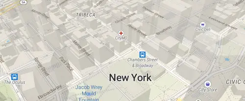
Use extrusions to display buildings' height in 3D.
Extrude polygons for 3D indoor mapping
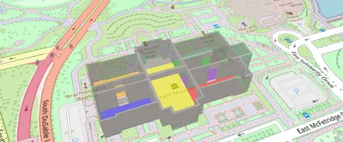
Create a 3D indoor map with the fill-extrude-height paint property.
3D Terrain
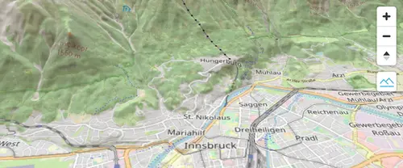
Go beyond hillshade and show elevation in actual 3D.
Add a 3D model with babylon.js
Use a custom style layer with babylon.js to add a 3D model to the map.
Add a 3D model with three.js
Use a custom style layer with three.js to add a 3D model to the map.
Add a default marker
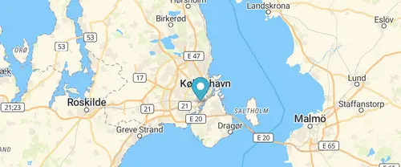
Add a default marker to the map.
Add an animated icon to the map
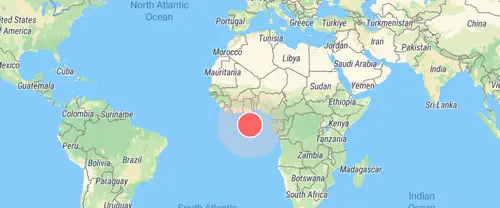
Add an animated icon to the map that was generated at runtime with the Canvas API.
Add a generated icon to the map
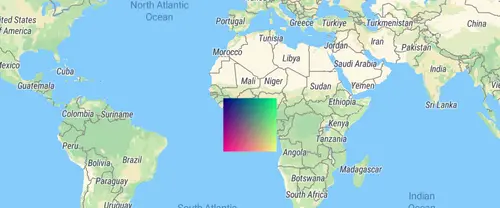
Add an icon to the map that was generated at runtime.
Generate and add a missing icon to the map
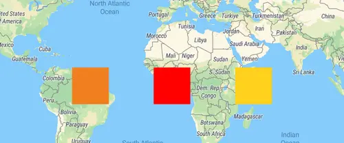
Dynamically generate a missing icon at runtime and add it to the map.
Add a stretchable image to the map
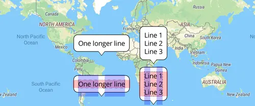
Use a stretchable image as a background for text.
Add an icon to the map
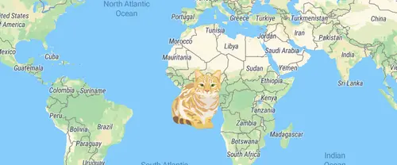
Add an icon to the map from an external URL and use it in a symbol layer.
Animate a line
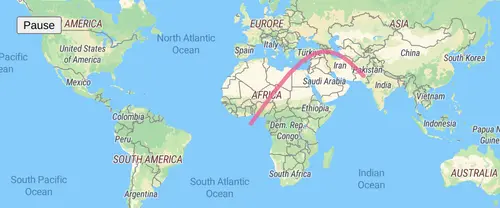
Animate a line by updating a GeoJSON source on each frame.
Animate map camera around a point
Animate the map camera around a point.
Animate a series of images
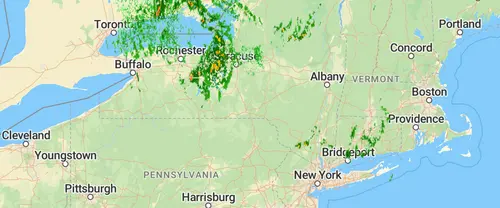
Use a series of image sources to create an animation.
Animate a marker
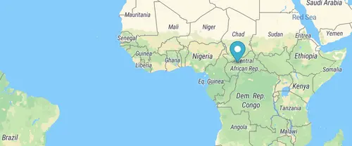
Animate the position of a marker by updating its location on each frame.
Animate a point
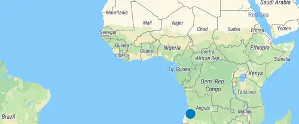
Animate the position of a point by updating a GeoJSON source on each frame.
Animate a point along a route
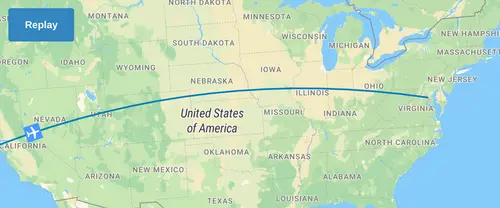
Use Turf to smoothly animate a point along the distance of a line.
Change the default position for attribution
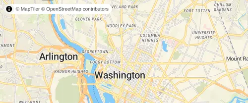
Place attribution in the top-left position when initializing a map.
Customize camera animations
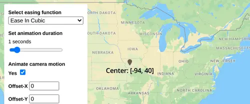
Customize camera animations using AnimationOptions.
Add a canvas source
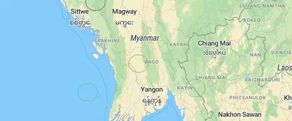
Add a canvas source to the map.
Center the map on a clicked symbol
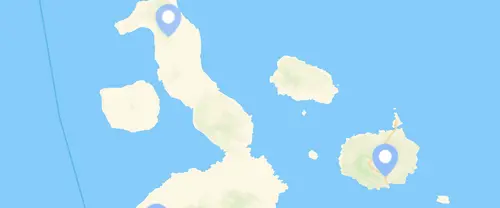
Use events and flyTo to center the map on a symbol.
Change building color based on zoom level
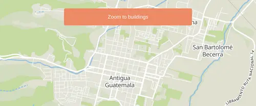
Use the interpolate expression to ease-in the building layer and smoothly fade from one color to the next.
Change the case of labels
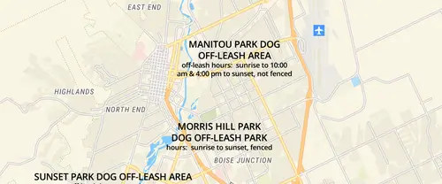
Use the upcase and downcase expressions to change the case of labels.
Check if MapLibre GL JS is supported
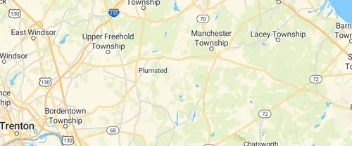
Check for MapLibre GL browser support.
Display HTML clusters with custom properties
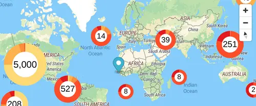
Extend clustering with HTML markers and custom property expressions.
Create and style clusters
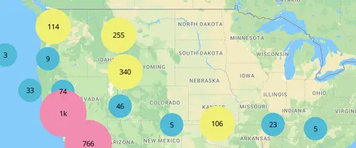
Use MapLibre GL JS' built-in functions to visualize points as clusters.
Change a layer's color with buttons
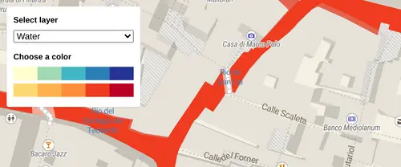
Use setPaintProperty to change a layer's fill color.
Add Contour Lines
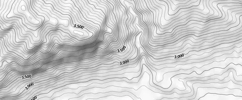
Add contour lines to your map from a raster-dem source.
Add custom icons with Markers
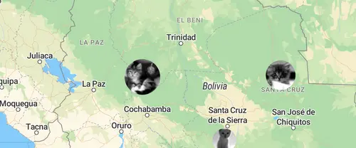
Add custom marker icons to your map.
Add a custom style layer
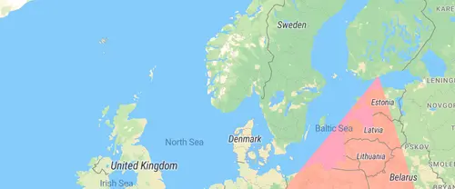
Use a custom style layer to render custom WebGL content.
Style lines with a data-driven property
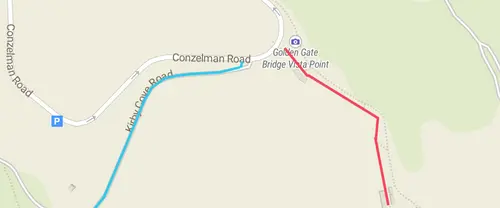
Create a visualization with a data expression for line-color.
Disable map rotation

Prevent users from rotating a map.
Disable scroll zoom
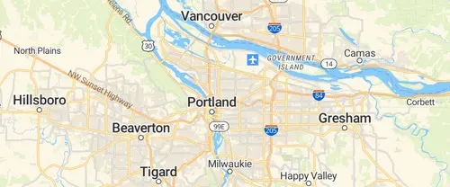
Prevent scroll from zooming a map.
Display and style rich text labels
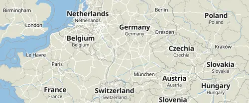
Use the format expression to display country labels in both English and in the local language.
Create a draggable Marker
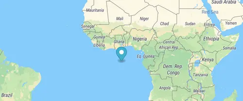
Drag the marker to a new location on a map and populate its coordinates in a display.
Create a draggable point
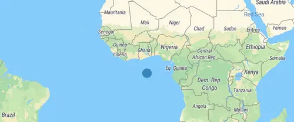
Drag the point to a new location on a map and populate its coordinates in a display.
Use a fallback image
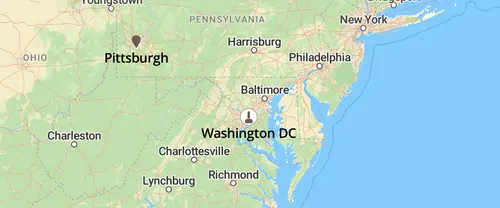
Use a coalesce expression to display another image when a requested image is not available.
Add a pattern to a polygon
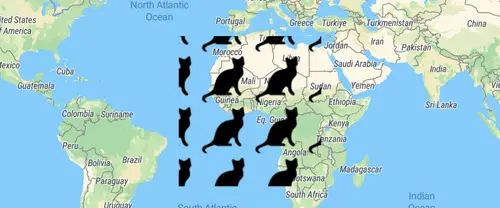
Use fill-pattern to draw a polygon from a repeating image pattern.
Filter symbols by text input
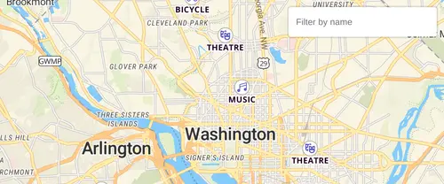
Filter symbols by icon name by typing in a text input.
Filter symbols by toggling a list
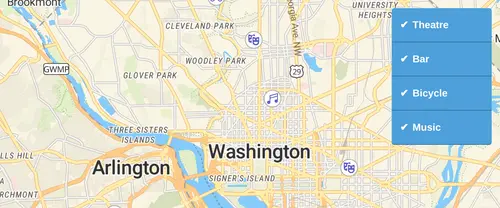
Filter a set of symbols based on a property value in the data.
Fit a map to a bounding box
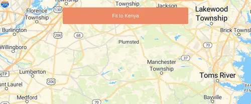
Fit the map to a specific area, regardless of the pixel size of the map.
Slowly fly to a location

Use flyTo with flyOptions to slowly zoom to a location.
Fly to a location
Use flyTo to smoothly interpolate between locations.
View a fullscreen map
Toggle between current view and fullscreen mode.
Navigate the map with game-like controls
Use the keyboard's arrow keys to move around the map with game-like controls.
Geocode with Nominatim
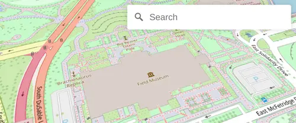
Geocode with Nominatim and the maplibre-gl-geocoder plugin.
Add a new layer below labels
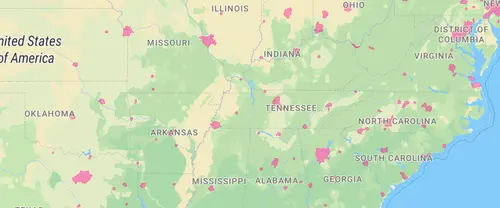
Use the second argument of addLayer to add a layer below labels.
Add a GeoJSON line
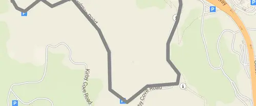
Add a GeoJSON line to a map using addSource, then style it using addLayer’s paint properties.
Draw GeoJSON points
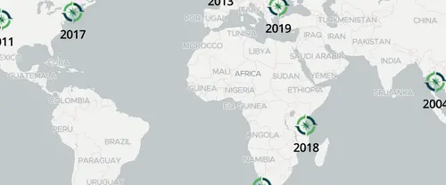
Draw points from a GeoJSON collection to a map.
Add a GeoJSON polygon
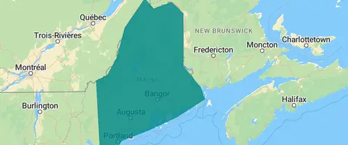
Style a polygon with the fill layer type.
Create a heatmap layer
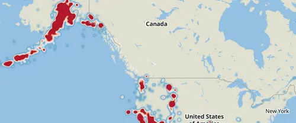
Visualize earthquake frequency by location using a heatmap layer.
Create a hover effect
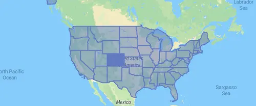
Use events and feature states to create a per feature hover effect.
Display a non-interactive map
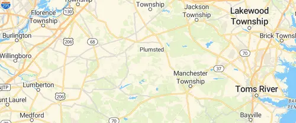
Disable interactivity to create a static map.
Jump to a series of locations
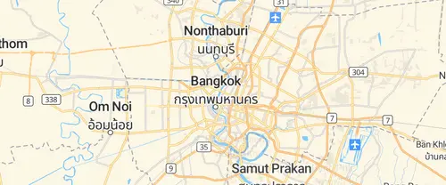
Use the jumpTo function to showcase multiple locations.
Change a map's language
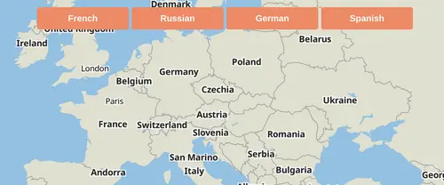
Use setLayoutProperty to switch languages dynamically.
Display line that crosses 180th meridian
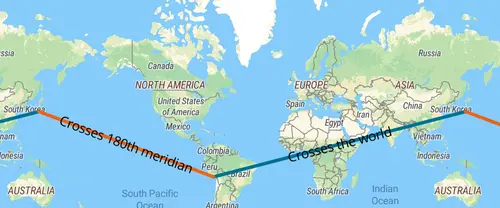
Draw a line across the 180th meridian using a GeoJSON source.
Create a gradient line using an expression
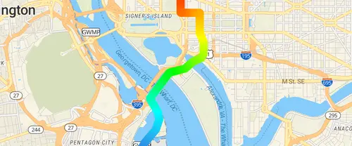
Use the line-gradient paint property and an expression to visualize distance from the starting point of a line.
Add live realtime data
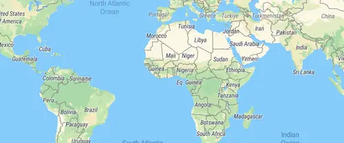
Use realtime GeoJSON data streams to move a symbol on your map.
Update a feature in realtime
Change an existing feature on your map in real-time by updating its data.
View local GeoJSON (experimental)
View local GeoJSON with experimental File System Access API.
View local GeoJSON
View local GeoJSON without server upload.
Use locally generated ideographs
Use the localIdeographFontFamily setting to speed up map load times by using locally available fonts instead of font data fetched from the server.
Locate the user
Geolocate the user and then track their current location on the map using the GeolocateControl.
Add a raster tile source
Add a third-party raster source to the map.
Show drawn polygon area
Use mapbox-gl-draw to draw a polygon and Turf.js to calculate its area in square meters.
Add support for right-to-left scripts
Use the mapbox-gl-rtl-text plugin to support right-to-left languages such as Arabic and Hebrew.
Measure distances
Click points on a map to create lines that measure distanced using turf.length.
Get coordinates of the mouse pointer
Show mouse position on hover with pixel and latitude and longitude coordinates.
Add multiple geometries from one GeoJSON source
Add a polygon and circle layer from the same GeoJSON source.
Display map navigation controls
Add zoom and rotation controls to the map.
Offset the vanishing point using padding
Offset the center or vanishing point of the map to reduce distortion when floating elements are displayed over the map.
Show polygon information on click
When a user clicks a polygon, show a popup containing more information.
Display a popup on click
When a user clicks a symbol, show a popup containing more information.
Display a popup on hover
When a user hovers over a custom marker, show a popup containing more information.
Display a popup
Add a popup to the map.
Get features under the mouse pointer
Use queryRenderedFeatures to show properties of hovered-over map elements.
Render world copies
Toggle between rendering a single world and multiple copies of the world using setRenderWorldCopies.
Restrict map panning to an area
Prevent a map from being panned to a different place by setting maxBounds.
Display a satellite map
Display a satellite raster baselayer.
Fly to a location based on scroll position
Scroll down through the story and the map will fly to the chapter's location.
Set pitch and bearing
Initialize a map with pitch and bearing camera options.
Attach a popup to a marker instance
Attach a popup to a marker and display it on click.
Display a map
Initialize a map in an HTML element with MapLibre GL JS.
Add a third party vector tile source
Render vector data provided by Mapillary.
Create a time slider
Visualize earthquakes with a range slider.
Toggle interactions
Enable or disable UI handlers on a map.
Variable label placement
Use text-variable-anchor to allow high priority labels to shift position to stay on the map.
Add a vector tile source
Add a vector source to a map.
Add a video
Display a video on top of a satellite raster baselayer.
Visualize population density
Use a variable binding expression to calculate and display population density.
Add a WMS source
Add an external Web Map Service raster layer to the map using addSource's tiles option.
Fit to the bounds of a LineString
Get the bounds of a LineString.